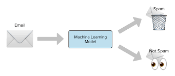
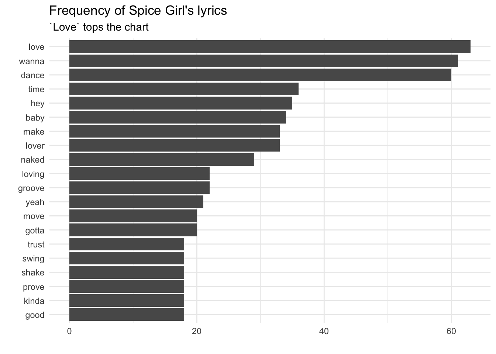
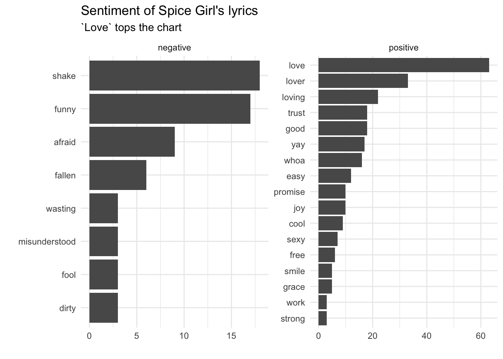

library(tidyverse)
library(tidytext)Introduction to Text Analysis
Text Analysis
Text Analysis or Text Analytics is the representation, processing and modelling of text data.
Text Mining is the procedure used to transform text into data that can be used by a machine learning technique.
Example: SPAM filtering

Example: Article Theme Classification

Example: Sentiment Analysis

Other Examples
- Government: spotting emerging trends and public concerns
- Financial institutions: detecting fraudulent activity (e.g. insurance)
- Retail: identifying potential customers; predict and avoid churning; improve the brand
- Market: identifying trends in different segments (e.g. using social network data)
Tidy Text
Using tidy data principles can make many text mining tasks easier, more effective, and consistent with tools already in wide use.
Learn more at https://www.tidytextmining.com/.
Packages
What is tidy text?
We can define the tidy text format as being a table with one-token-per-row. A token is a meaningful unit of text, such as a word, that we are interested in using for analysis, and tokenization is the process of splitting text into tokens.
Tidy data sets allow manipulation with a standard set of “tidy” tools, including popular packages such as dplyr (Wickham and Francois 2016), tidyr (Wickham 2016) and ggplot2 (Wickham 2009). By keeping the input and output in tidy tables, users can transition fluidly between these packages. These tidy tools extend naturally to many text analyses and explorations.
Simple example
text <- c("Take me out tonight",
"Where there's music and there's people",
"And they're young and alive",
"Driving in your car",
"I never never want to go home",
"Because I haven't got one",
"Anymore")
text[1] "Take me out tonight"
[2] "Where there's music and there's people"
[3] "And they're young and alive"
[4] "Driving in your car"
[5] "I never never want to go home"
[6] "Because I haven't got one"
[7] "Anymore" text_df <- tibble(line = 1:7, text = text)
text_df# A tibble: 7 × 2
line text
<int> <chr>
1 1 Take me out tonight
2 2 Where there's music and there's people
3 3 And they're young and alive
4 4 Driving in your car
5 5 I never never want to go home
6 6 Because I haven't got one
7 7 Anymore text_df %>%
unnest_tokens(word, text)# A tibble: 32 × 2
line word
<int> <chr>
1 1 take
2 1 me
3 1 out
4 1 tonight
5 2 where
6 2 there's
7 2 music
8 2 and
9 2 there's
10 2 people
# ℹ 22 more rowsSentiment Analysis with song lyrics
Our modeling goal is to “discover” topics in the lyrics of Spice Girls songs. Instead of a supervised or predictive model where our observations have labels, this is an unsupervised approach.
We can read in and glimpse the data as follows:
library(tidyverse)
lyrics <-
read_csv("https://raw.githubusercontent.com/rfordatascience/tidytuesday/master/data/2021/2021-12-14/lyrics.csv")glimpse(lyrics)Rows: 1,885
Columns: 9
$ artist_name <chr> "Spice Girls", "Spice Girls", "Spice Girls", "Spice Gir…
$ album_name <chr> "Spice", "Spice", "Spice", "Spice", "Spice", "Spice", "…
$ track_number <dbl> 1, 1, 1, 1, 1, 1, 1, 1, 1, 1, 1, 1, 1, 1, 1, 1, 1, 1, 1…
$ song_id <dbl> 89740, 89740, 89740, 89740, 89740, 89740, 89740, 89740,…
$ song_name <chr> "Wannabe", "Wannabe", "Wannabe", "Wannabe", "Wannabe", …
$ line_number <dbl> 1, 2, 3, 4, 5, 6, 7, 8, 9, 10, 11, 12, 13, 14, 15, 16, …
$ section_name <chr> "Intro", "Intro", "Intro", "Intro", "Intro", "Intro", "…
$ line <chr> "Hahaha", "Yo, I'll tell you what I want, what I really…
$ section_artist <chr> "Scary, Ginger", "Scary, Ginger", "Scary, Ginger", "Sca…Let’s just consider the album called “Spice” and look at the song names in that album. Note the use of the distinct function as each song name appears multiple times in the dataset.
spice_lyrics <- lyrics %>%
filter(album_name == "Spice")
spice_lyrics %>% distinct(song_name)# A tibble: 10 × 1
song_name
<chr>
1 "Wannabe"
2 "Say You\x92ll Be There"
3 "2 Become 1"
4 "Love Thing"
5 "Last Time Lover"
6 "Mama"
7 "Who Do You Think You Are"
8 "Something Kinda Funny"
9 "Naked"
10 "If U Can\x92t Dance" Let’s get an idea of how long the songs are by looking at the number of lines in each song.
spice_lyrics %>%
count(song_name) %>%
arrange(n)# A tibble: 10 × 2
song_name n
<chr> <int>
1 "Something Kinda Funny" 34
2 "2 Become 1" 42
3 "Mama" 55
4 "Say You\x92ll Be There" 55
5 "Who Do You Think You Are" 58
6 "Wannabe" 60
7 "Naked" 70
8 "Last Time Lover" 72
9 "If U Can\x92t Dance" 73
10 "Love Thing" 80Tidy up your lyrics
tidy_spice_lyrics <- spice_lyrics %>%
unnest_tokens(word,line) %>%
select(word, track_number, song_name)
tidy_spice_lyrics # A tibble: 4,609 × 3
word track_number song_name
<chr> <dbl> <chr>
1 hahaha 1 Wannabe
2 yo 1 Wannabe
3 i'll 1 Wannabe
4 tell 1 Wannabe
5 you 1 Wannabe
6 what 1 Wannabe
7 i 1 Wannabe
8 want 1 Wannabe
9 what 1 Wannabe
10 i 1 Wannabe
# ℹ 4,599 more rowsWhat are the most common words?
tidy_spice_lyrics %>%
count(word) %>%
arrange(desc(n))# A tibble: 574 × 2
word n
<chr> <int>
1 you 322
2 it 226
3 i 134
4 me 108
5 to 84
6 can't 81
7 if 69
8 and 67
9 a 63
10 love 63
# ℹ 564 more rowsStop words
In computing, stop words are words which are filtered out before or after processing of natural language data (text). They usually refer to the most common words in a language, but there is not a single list of stop words used by all natural language processing tools.
library(stopwords)
get_stopwords(language = "en", source = "snowball")# A tibble: 175 × 2
word lexicon
<chr> <chr>
1 i snowball
2 me snowball
3 my snowball
4 myself snowball
5 we snowball
6 our snowball
7 ours snowball
8 ourselves snowball
9 you snowball
10 your snowball
# ℹ 165 more rowsNote, the stopword lexicon is specified. The default is “snowball”. Use stopwords_getsources() to see available sources.
stopwords_getsources()[1] "snowball" "stopwords-iso" "misc" "smart"
[5] "marimo" "ancient" "nltk" "perseus" What are the most common words when we exclude stop words?
common_spice_lyrics <- tidy_spice_lyrics %>%
anti_join(get_stopwords(source = "smart")) %>%
count(word) %>%
arrange(desc(n))Joining with `by = join_by(word)`common_spice_lyrics# A tibble: 384 × 2
word n
<chr> <int>
1 love 63
2 wanna 61
3 dance 60
4 time 36
5 hey 35
6 baby 34
7 lover 33
8 make 33
9 naked 29
10 groove 22
# ℹ 374 more rowsLet’s visualise the most common words
ggplot(common_spice_lyrics %>% top_n(20), aes(x = fct_reorder(word,n), y = n)) +
geom_col() +
coord_flip() +
theme_minimal() +
labs(title = "Frequency of Spice Girl's lyrics",
subtitle = "`Love` tops the chart",
y = "",
x = "")
Sentiment Analysis
One way to analyze the sentiment of a text is to consider the text as a combination of its individual words and the sentiment content of the whole text as the sum of the sentiment content of the individual words.
Sentiment lexicons
get_sentiments("bing")# A tibble: 6,786 × 2
word sentiment
<chr> <chr>
1 2-faces negative
2 abnormal negative
3 abolish negative
4 abominable negative
5 abominably negative
6 abominate negative
7 abomination negative
8 abort negative
9 aborted negative
10 aborts negative
# ℹ 6,776 more rowsYou can get other lexicons with the tidytext package. The “afinn” lexicon returns a numeric value instead of a sentiment. The value is an integer between minus five (negative) and plus five (positive).
get_sentiments("afinn")# A tibble: 2,477 × 2
word value
<chr> <dbl>
1 abandon -2
2 abandoned -2
3 abandons -2
4 abducted -2
5 abduction -2
6 abductions -2
7 abhor -3
8 abhorred -3
9 abhorrent -3
10 abhors -3
# ℹ 2,467 more rowsSentiments in Spice Girls lyrics
We’ll use the “bing” lexicon.
sentiment_spice_lyrics <- tidy_spice_lyrics %>%
anti_join(get_stopwords(source = "smart")) %>%
inner_join(get_sentiments("bing")) %>%
count(sentiment, word) %>%
arrange(desc(n))
sentiment_spice_lyrics# A tibble: 69 × 3
sentiment word n
<chr> <chr> <int>
1 positive love 63
2 positive lover 33
3 positive loving 22
4 negative shake 18
5 positive good 18
6 positive trust 18
7 negative funny 17
8 positive yay 17
9 positive whoa 16
10 positive easy 12
# ℹ 59 more rowsSentiments in Spice Girls lyrics
sentiment_spice_lyrics %>%
group_by(sentiment) %>%
summarise(n_sentiment = sum(n))# A tibble: 2 × 2
sentiment n_sentiment
<chr> <int>
1 negative 98
2 positive 279Visualise the Sentiments in Spice Girls lyrics
ggplot(sentiment_spice_lyrics %>% top_n(20), aes(x = fct_reorder(word,n), y = n)) +
geom_col() +
coord_flip() +
theme_minimal() +
labs(title = "Sentiment of Spice Girl's lyrics",
subtitle = "`Love` tops the chart",
y = "",
x = "") +
facet_wrap(~sentiment, scales = "free")Selecting by n